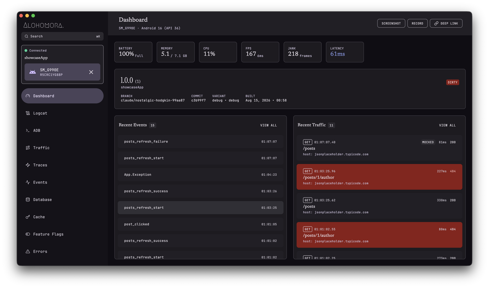
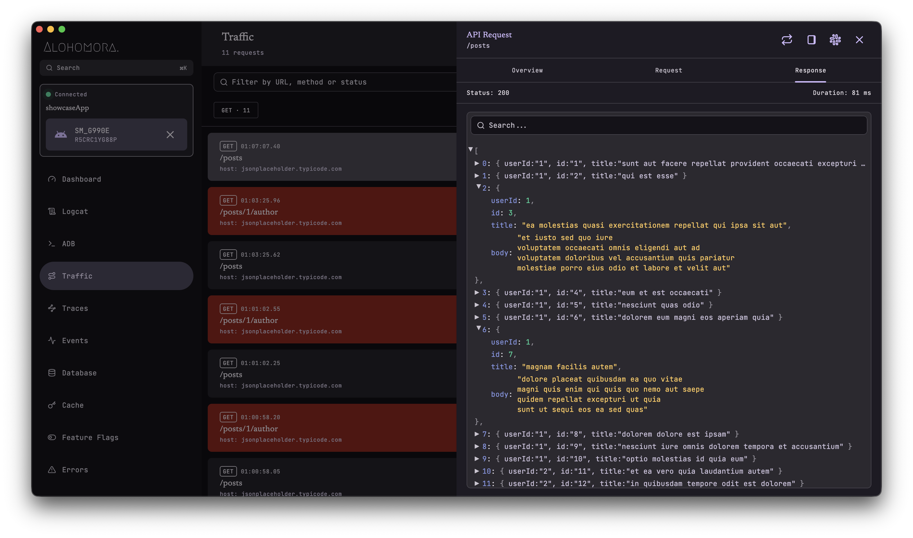
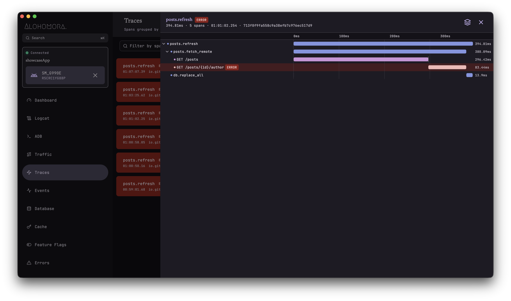
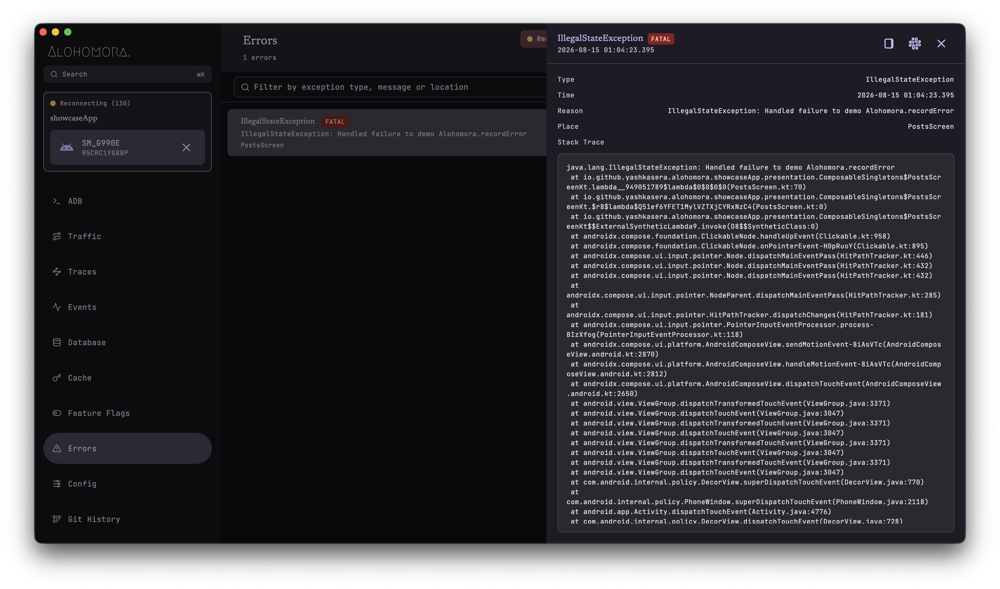
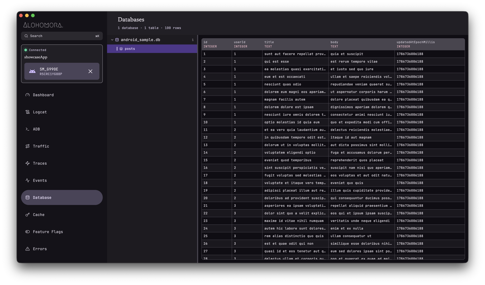
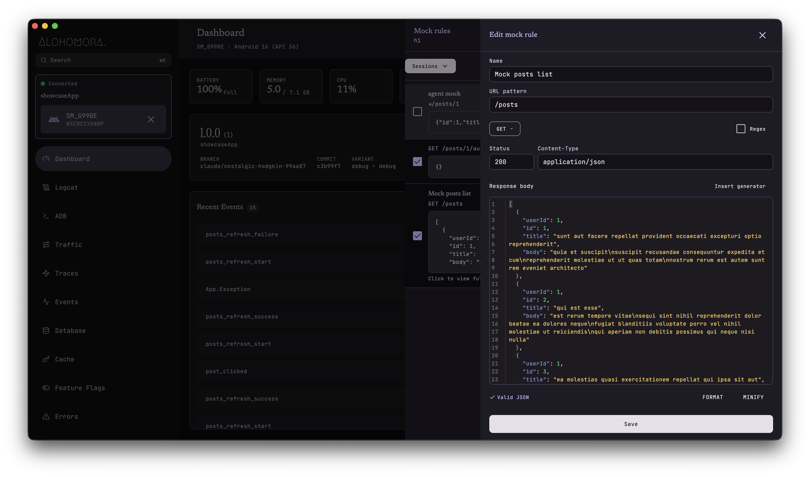
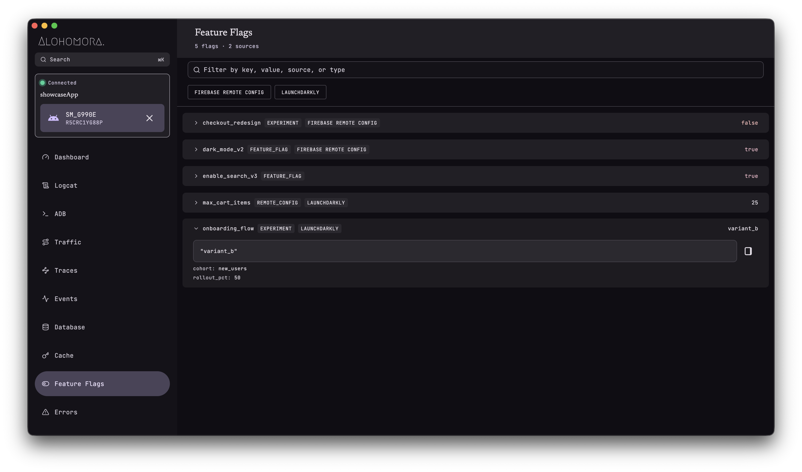
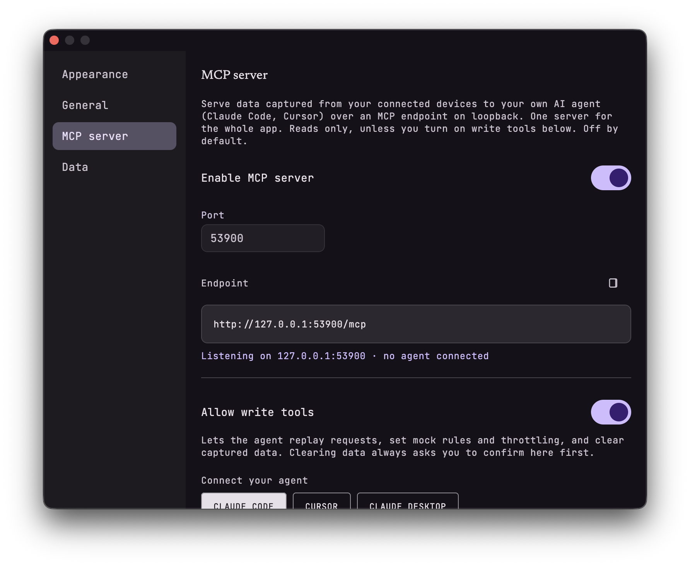
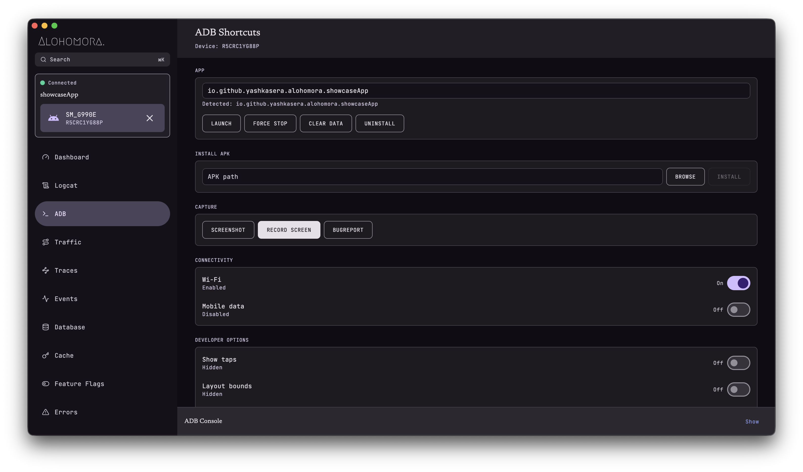

Real-time observability for your debug builds. Traffic, traces, events, database state, errors — captured, streamed, and now accessible to your AI coding assistant via MCP.
debugImplementation("io.github.yashkasera:alohomora:1.0.0")

Every request, database write, event, and exception is captured and surfaced the moment it happens.
Answer "what just happened?" immediately. No log archaeology. No rebuilding mental models.
The noop artifact mirrors every method with empty bodies. R8 optimises it away completely.
Depends on no tracing SDK. A ~15-line adapter bridges whatever tracer you already run.
The desktop companion and in-app console, running against a live showcase app.

Requests stream in as they happen. Expand any row for headers, body, and timing breakdown.

Spans render as a nested waterfall. Click any bar for attributes, events, and self-time.

Caught and uncaught exceptions with full stack traces, timestamps, and the screen where they occurred.

Browse tables, page through rows, view schema. Double-click any cell to edit values live on the device.

Create a mock from captured traffic, add template generators, see mocked responses on the next request.

View flags from Firebase Remote Config, LaunchDarkly, or any source. Expand to see metadata and raw values.

AI coding assistants query your app's live data through read-only MCP tools. Debug with natural language.

Launch, force stop, clear data, install APKs, toggle connectivity, and capture screenshots or screen recordings.
Unified inspection across every dimension of your running app, streamed to an in-app console and a desktop companion.
Every outbound request captured with method, URL, status, latency, headers, and bodies. Auto-capture for OkHttp and Ktor.
OkHttp · Ktor · ManualEdit a captured request and re-send it through your own HTTP client. Signatures regenerated by your interceptors.
Edit & Re-sendWaterfall view of spans grouped by trace ID, nested by parent. Adapters for OpenTelemetry and Sentry.
OpenTelemetry · SentrySearchable timeline of named events with timestamps and optional properties. What happened, in order.
Timeline · PropertiesBrowse tables, page through rows, view schema. Double-click any cell to edit values live on the device. Android and iOS.
Room · SQLite · Inline EditingUncaught exceptions captured automatically. Caught exceptions via recordError().
Chains to your crash handler.
Inspect SharedPreferences and NSUserDefaults. Encrypted entries flagged. Read-only view.
SharedPrefs · UserDefaultsRecord and inspect feature flag state with source, type, and metadata. Batch import from any provider.
Remote Config · CustomBranch, commit SHA, dirty flag, version, build timestamp. Last N commits injected at build time.
Gradle Plugin · XcodeIntercept requests and return custom responses. Template engine with generators. Import from HAR files.
Templates · HAR Import · SessionsCompose deep links with scheme, host, path, and query params. Fire on-device. History persisted.
Builder · History · ADBCmd/Ctrl+K to search and trigger any action. Navigate sections, toggle theme, fire ADB commands.
Keyboard-first · DesktopExpose captured data to AI coding assistants (Claude Code, Cursor) as read-only MCP tools over Streamable HTTP.
AI Agents · DesktopShake the device to instantly open the debug console. Configurable sensitivity threshold.
Android · iOSSimulate slow networks at interceptor level or device-wide via a local VPN. Edge, 3G, and Wi-Fi presets.
VPN · Interceptor · PresetsTwo artifacts, same API. Your debug build gets full observability. Your release build gets empty method bodies that R8 optimises away.
dependencies { debugImplementation("io.github.yashkasera:alohomora:1.0.0") releaseImplementation("io.github.yashkasera:alohomora-noop:1.0.0") }
Android auto-initializes via AndroidX Startup. Shake the device to open the console.
| Capability | alohomora (debug) | alohomora-noop (release) |
|---|---|---|
| Network traffic capture | ✓ | No-op |
| Distributed trace spans | ✓ | No-op |
| Event recording | ✓ | No-op |
| Error capture + crash handler | ✓ | No-op |
| Database inspection | ✓ | No-op |
| Cache / prefs viewer | ✓ | No-op |
| Feature flags | ✓ | No-op |
| Traffic replay | ✓ | No-op |
| Mock rules + template engine | ✓ | No-op |
| Network throttling (VPN) | ✓ | No-op |
| Shake to open console | ✓ | No-op |
| MCP server for AI agents | ✓ (desktop) | — |
| DevTools TCP server | ✓ | No-op |
| Runtime overhead | Debug only | Zero |
| APK size impact | ~2 MB | <10 KB |
Everything the in-app console shows, plus desktop-only panels.
Streamed in real time over ADB.
Expose data to AI assistants via Streamable HTTP.
Create, import, and manage mock sessions with template generators.
Compose and fire deep links on-device with persistent history.
Cmd+K to search actions, navigate, and fire ADB commands.
Double-click any cell to edit values live on the device.
Theme picker, mode selector, and data clearing.
Needs-attention view for unviewed errors and failed requests.
Syntax-highlighted editor with bracket matching and validation.
Streamed device log with filtering.
Built-in ADB shell.
One window per device.
4-digit OTP, then silent reconnect.
Two lines of Gradle. Zero lines of init code on Android.
Full
observability in debug, nothing in release.